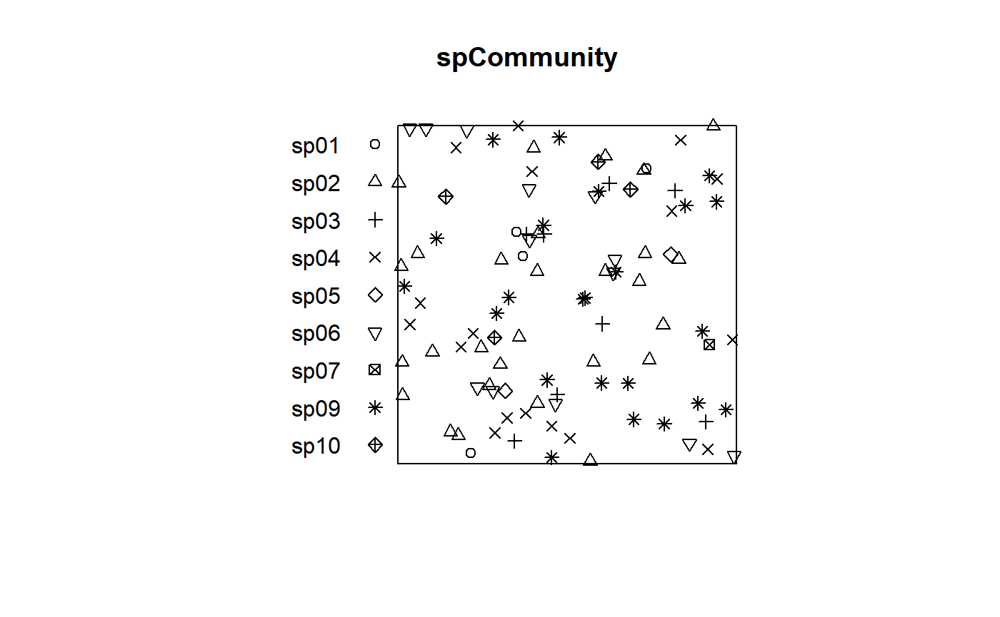
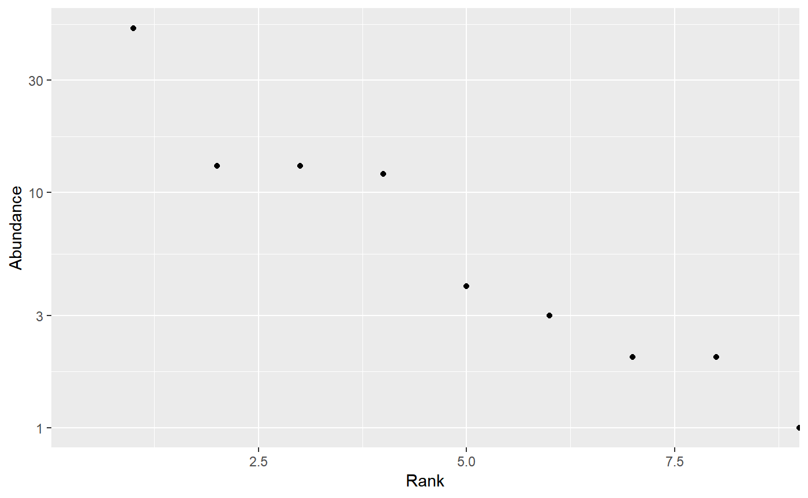
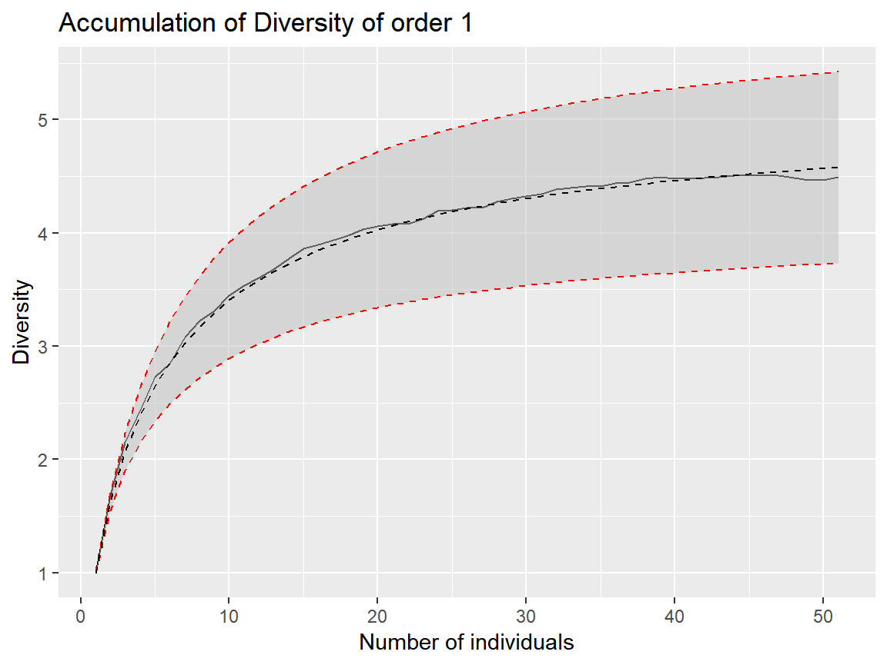
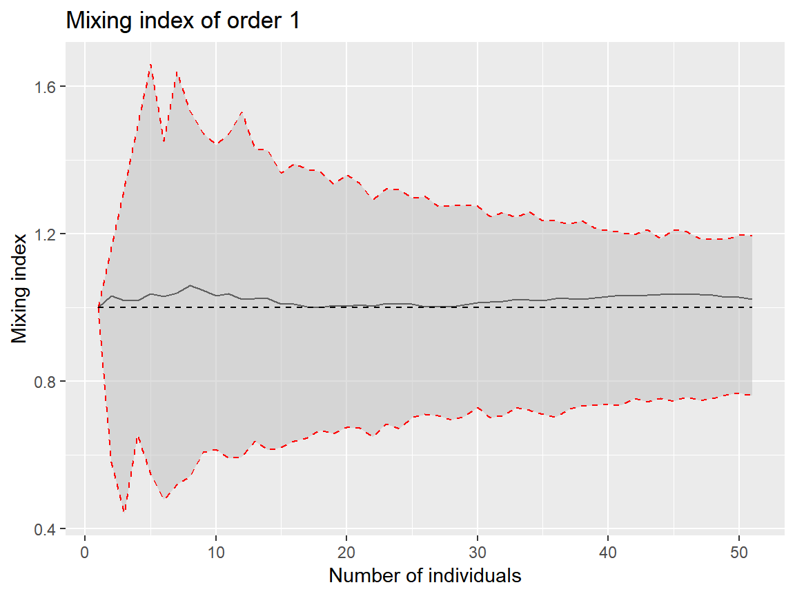
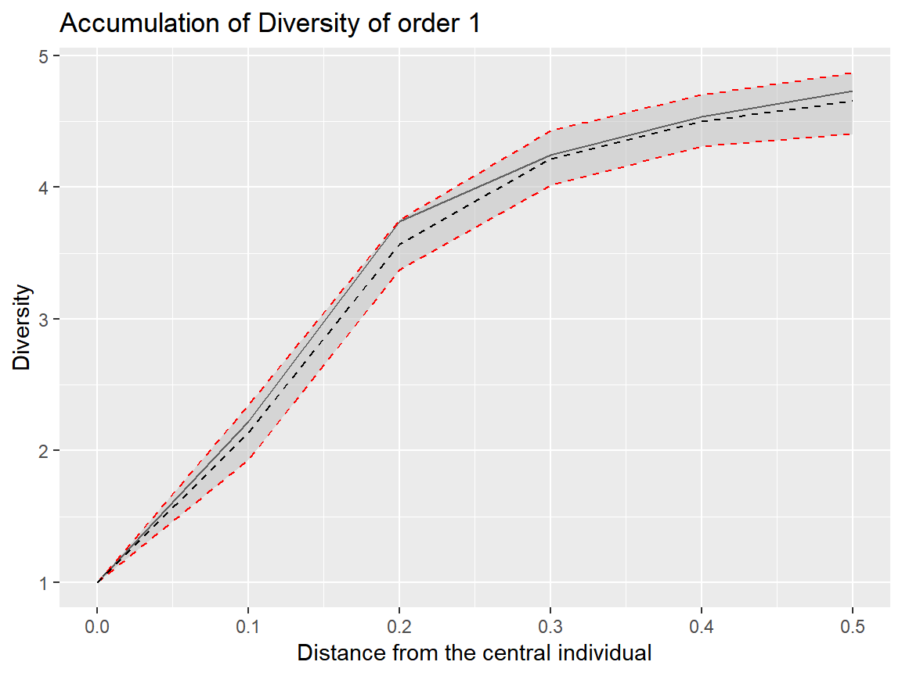

This is a preliminary version of a package designed to measure spatially-explicit diversity.
Install the package for R from Github.
library("remotes")
remotes::install_github("EricMarcon/SpatDiv")Create a random, spatialized community with 100 individuals of 10 species.
library("SpatDiv")## Le chargement a nécessité le package : Rcpp## Le chargement a nécessité le package : entropart## Le chargement a nécessité le package : ggplot2rSpCommunity(n=1, size=100, S=10) -> spCommunity
plot(spCommunity, which.marks = "PointType")
Plot a rank-abundance curve.
autoplot(as.AbdVector(spCommunity))
Compute the Diversity Accumulation Curve for 1 to 50 neighbors for orders 0, 1 and 2, with the theoretical, null-model curve. Plot it for Shannon diversity.
divAccum <- DivAccum(spCommunity, n.seq=1:50, q.seq=0:2, H0="Multinomial", NumberOfSimulations=1000)autoplot(divAccum, q = 1)
Compute and plot the mixing index of any order. Save the local values for future use.
mixing <- Mixing(spCommunity, n.seq=1:50, q.seq=0:2, H0="Multinomial", NumberOfSimulations=1000, Individual=TRUE)autoplot(mixing, q = 1)
The same accumulation cuves can be computed by increasing the sample area around each point. The argument contains the vector of radii of those circular plots.
divAccum <- DivAccum(spCommunity, r.seq = seq(0, .5, by=.1), q.seq=0:2, spCorrection = "Extrapolation", H0="Binomial")autoplot(divAccum, q = 1)
The actual accumulation curves of diversity and mixing index can be compared to null models with their confidence intervals. Values of the argument can be:
“None”: No null model is run.
“Multinomial”: The accumulation follows a multinomial sampling, with respect to the number of individuals only. The theoretical value and confidence envelope are calculated by the entropart package.
“Binomial”: The individuals are relocated in the window uniformly and independently.
“RandomLocation”: The individuals are relocated accross their actual locations.
The multinomial null hypothesis is by far faster to compute than the others because it does not require point pattern simulations.